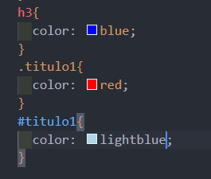
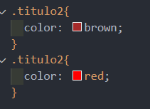

La especificidad tiene tres niveles de prioridad, los cuales son:
Tiene todas las prioridades definidas porque es un articulo h3, por ende tiene la más baja, además le agregué un "class" y un "id", ambos definidos como "titulo1". A pesar de que en css tiene propiedadades diferentes según su prioridad, este título tiene el color de la prioridad más alta (lightblue):
En caso de que no estuviera definido el "id" (prioridad más alta) el color sería rojo porque "class" tiene un prioridad mayor.
La cascada se usa para asignar una propiedad según el orden de asignación, es decir, que si a un elemento se le define una propiedad de manera diferente con la misma prioridad este elemento adoptará la última propiedad que se definió.
El titulo anterior tiene la prioridad "class" definida como "titulo2" y el css se ha modificado el color usando dos veces esta prioridad.
Como se puede ver el titutlo tiene color rojo, dado que esta fue la última propiedad en definirse.